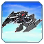
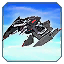

Всё меняется!
Всем Привет! Это наш ГАФ баланс. Все внесенные изменения могут быть изменены повторно.
Дисклеймер: Внесенные здесь изменения могут быть нарушены или иметь непредвиденные побочные эффекты, если вы с чем-то столкнетесь, пожалуйста, сообщите об этом в отдел баланса на сайте. Игровые Баги репортить сюда (канал на сервере GAF Discord)
Все изменения, которые в настоящее время внесены в GAF, позволяют нам оценить новый баланс в реальных играх.
Баланс Команда: Isakentyi, Angel, Sticky, SupremeKiska и Gary_Goodspeed
 Корсары
Корсары  Палаш и Шахтер
 Палаш и Шахтер